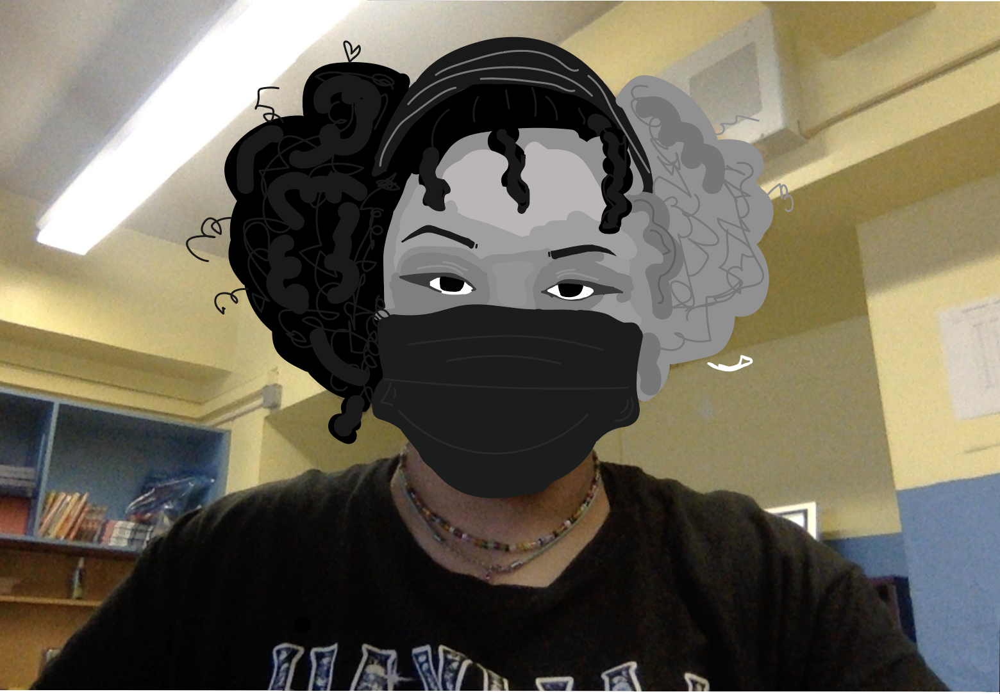
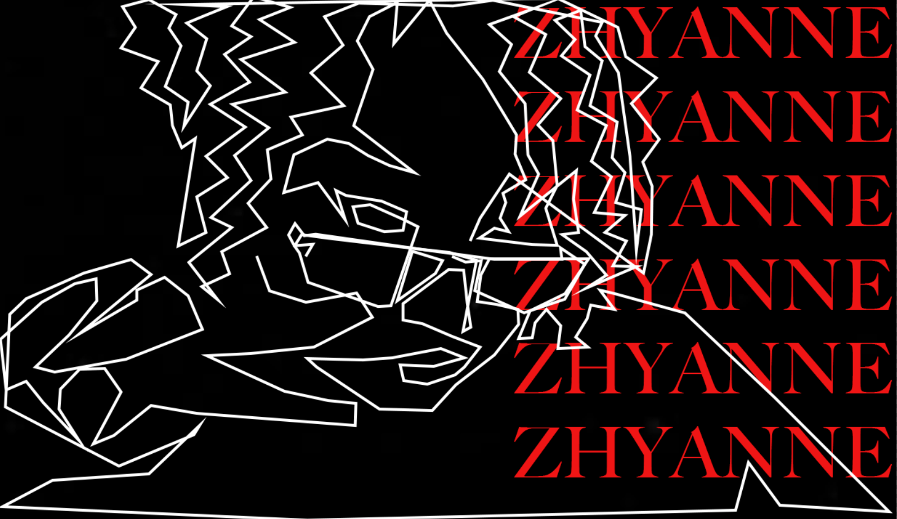
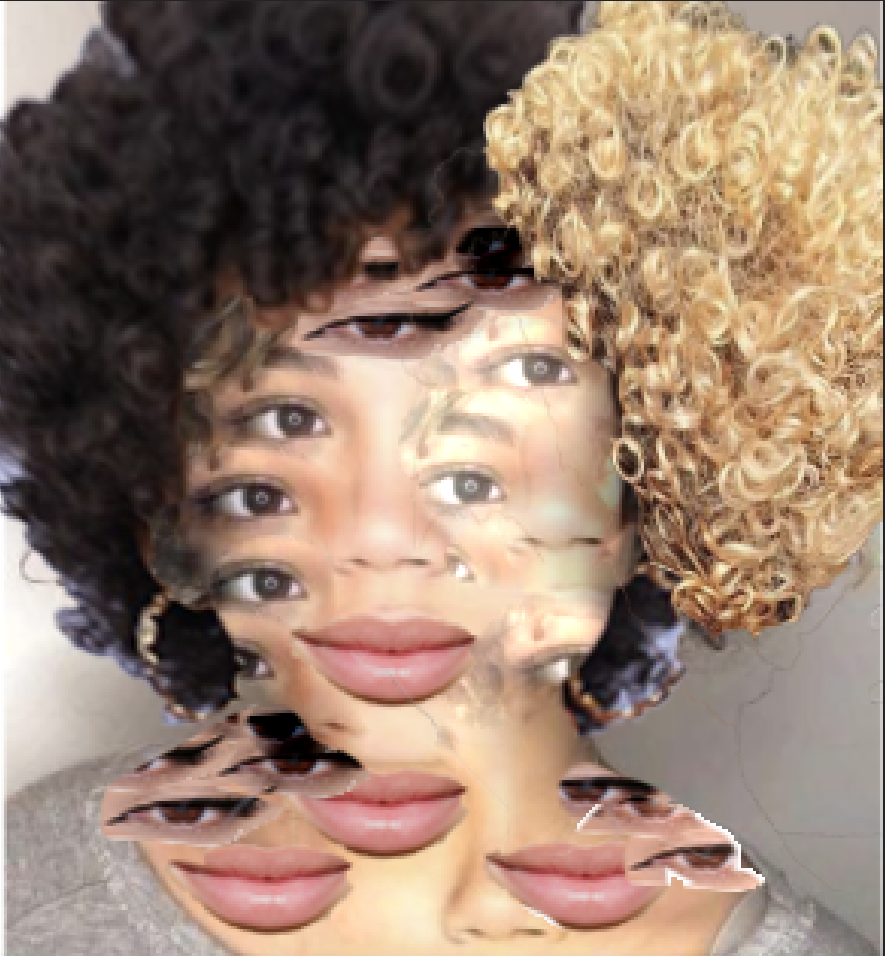
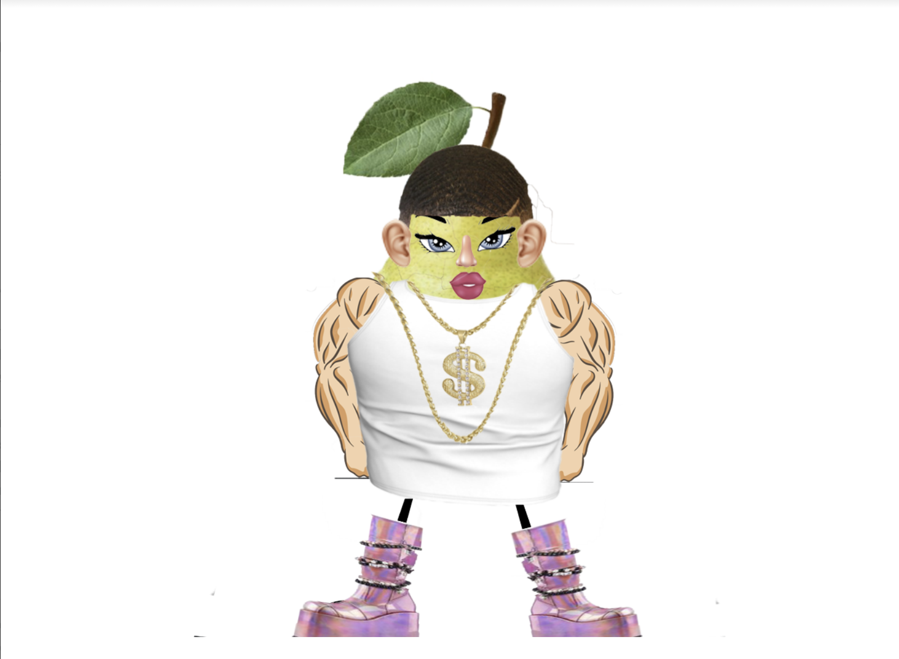
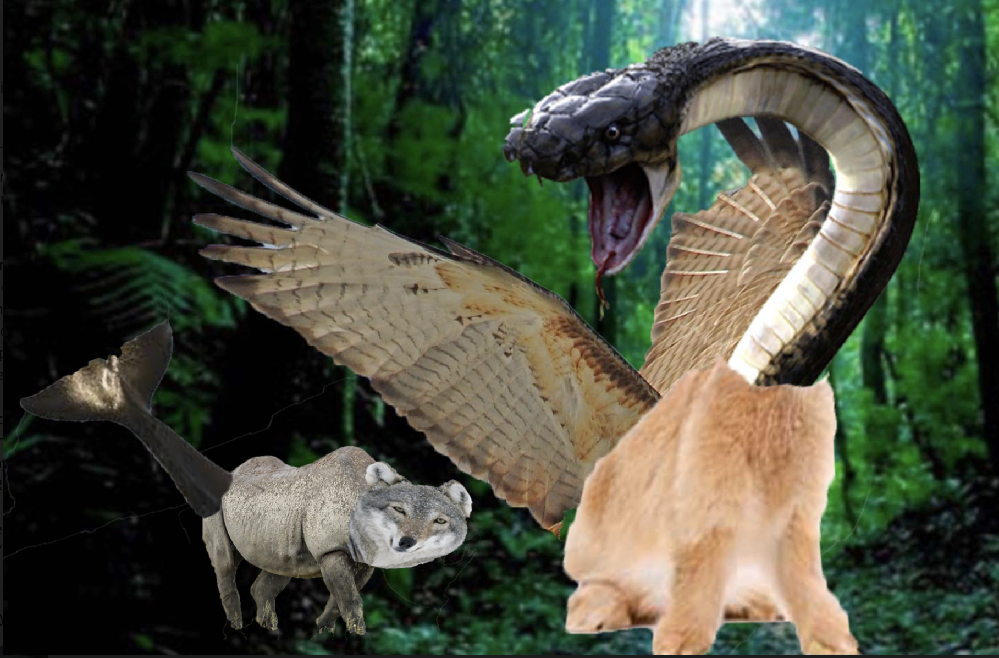
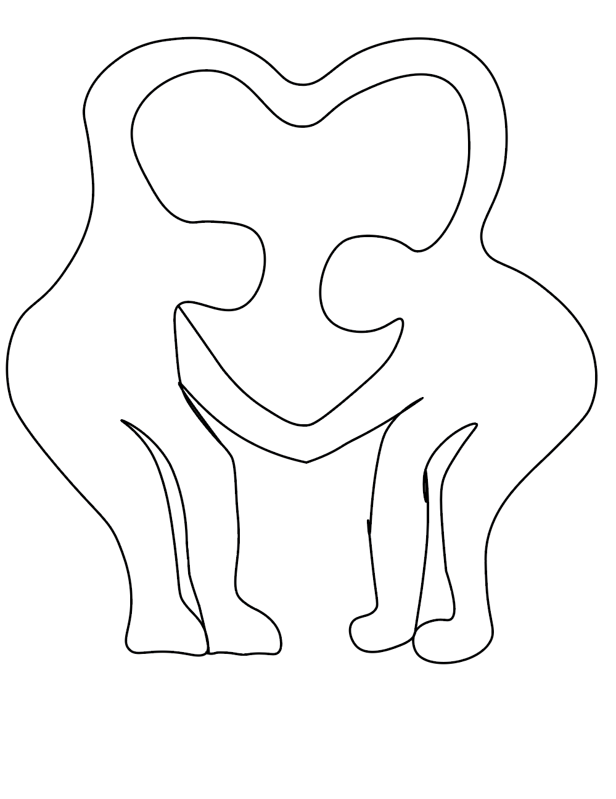

Visual Design Artifacts
My Art
Artifacts #1:Grayscale Portraits

For this project I used a photo of myself and the blob brush tool. I used light and dark grays, black and white to complete this art piece. The trick is to use different types of grays to match the skin, hair and features. For example, I have fair skin so I used a light gray to match it. I used 7 different shades, however the hardest part of this creation was patience. It's really challenging to just sit there and match shades and draw along the lines, and flawless eyes. The easiest part of this project was the fun of it all and the finishing touches. It's really satisfying to work hard on something and come out with an awesome result that you're proud of.
Artifacts #2: Contour Portraits

I used a photo of me, a special photo to me because i think i look good in that photo and i personally like it. I included my name in the background so people know its me, i put my name in red and the background black because those are my favorite colors and they go together. First i used the pen tool to trace my features and me in general, it was a bit tricky but it turned out nice, then i added a black background from online and added extra text in the background claiming my art.
artifacts #3: Picasso Portraits

In this project, I used features that replicate my facial features such as the lips, eyes and hair. The tools I used were the quick selection tool to trace out extra lips and eyes and the blond and black part of the hair. Then i dragged them to the original photo and duplicate the eyes and extra lips, i place the eyes and lips all over the photo. I used the healing brush to duplicate the nose to somewhere else on the photo of “me”. I personally think it kinda look like me, but the hair and the features are similar to mine.
Artifact #4:

For this project I decided to do a pear as the body and I used the selection tool, brush tool, free transform and warping tools. I used very different parts like pink demonias, dollar sign chain, a roblox face, extra ears and a nose, wave style hair, cartoon legs, buff arms and a white tank top. I personally think my beautiful pear has an introverted/ extroverted personality because although they show out with their very outrageous clothing style they can be very shy from time to time but when they are with their friends, they are very assertive and affectionate. I would sell it in a shop for adults/ teens because I'm pretty sure kids would have interest in that kind of looking toy.
Artifact #5

For my animals I chose a snake rabbit and eagle because it's pretty ironic how the predators and prey are mixed together. I had an idea that if they came together that they'd be stronger. I feel like my beast/creature would have a very good sense of smell, hearing and amazing eyesight which would help them defend themselves from danger. When they sense a nearby predator, they innately freeze in place to camouflage with the landscape. They would have super speed and be able to fly and be super smart. I used the select tool to select one body part that i wanted from the 3 animals which was the snakes head/neck, rabbit body and the eagles wings, and then i put all of the selected parts and in one layer, warped the snake part to fit the rabbit body and but the eagle wings on the rabbit part of the body. I then added a forest background to show the type of habitat they live in.
Artifact #6

I made this project using adobe and the tools I used in the website is a pen tool which helped me make curves and lines for my doodle.The elements I made were two people creating a big heart with their arms